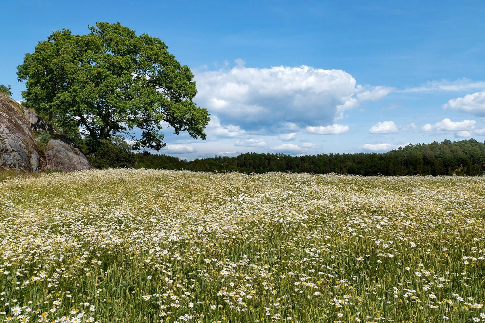

店のこと
店のこと
お店について確認できているのは、所在地・電話番号・Instagramのアカウントです。
確認できていること
- 店名は「Good Time Bakers(グッドタイムベイカーズ)」、業種はパン屋
- 所在地は沖縄県石垣市大川514-2(〒907-0022)
- 電話番号は0980-87-8547
- 営業時間・定休日・メニュー・価格・ご予約・駐車場は準備中
下の「想像してみる」は、制作側が想像して書いたものです。お店の実際の様子・考え・メニューとは関係がありません。

想像してみる
タイムカードの三行
由来は分かりません。制作側は「Good Time」を、打刻の一行にたとえて遊んでみました。「出」の欄には始まりのわくわく、「休」の欄にはひと息、「退」の欄には満足の気持ちを書き込める、という見立てです(実際のお店の姿ではありません)。
| 欄 | 見立て | 打刻 |
|---|---|---|
| 出 | はじまりの欄 | --:-- |
| 休 | ひと息の欄 | --:-- |
| 退 | おしまいの欄 | --:-- |

